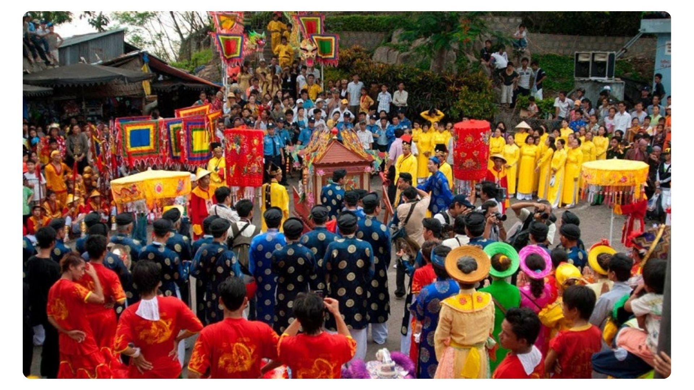

Từ khi đất Cần Thơ hình thành, đã là trung tâm quần cư của nhiều dân tộc. Từ đó, đời sống tín ngưỡng có sự giao lưu, tạo nét đặc sắc riêng.
Vào thời khẩn hoang, các tộc người gặp khó khăn trước thực tế khắc nghiệt của thiên nhiên.
Thế nhưng với ý thức về cội nguồn dân tộc, nhu cầu văn hóa tâm linh và gắn kết cộng đồng, người dân Cần Thơ đã có những sinh hoạt tín ngưỡng đơn giản, như thờ Phúc thần, Trời, Phật…
Bên cạnh đó, người Cần Thơ tiếp thu các giá trị văn hóa tín ngưỡng thuộc các tộc người khác trong quá trình giao tiếp văn hóa trên vùng đất mới.
Bởi vì thần thánh của dân tộc khác vẫn là tiêu biểu cho việc khuyến thiện trừng ác, đã tôn kính rồi thì người bản địa và người mới đến không ai mặc cảm tự ti hoặc tự tôn.
Việc giao lưu tín ngưỡng trên hết nhằm tăng cường sức mạnh tinh thần cho lưu dân nơi vùng đất mới.
Những giá trị được tích hợp thông qua các quá trình giao lưu, hội nhập, tiếp biến văn hóa… ngày càng mở rộng để trở thành những sức mạnh có tác động đời sống xã hội… từ đó từng bước góp phần hình thành nên bản sắc văn hóa ở địa phương